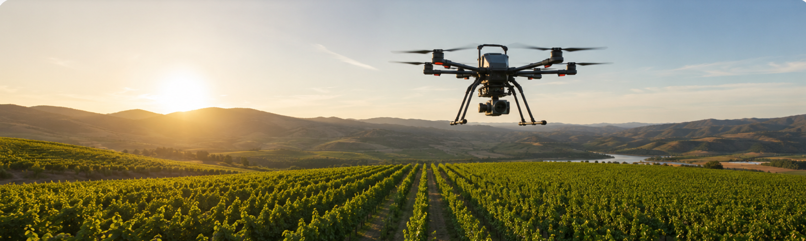

Observación por satélite
Uso de imágenes Sentinel-2 y otras plataformas para el seguimiento del estado de los cultivos y la estimación de parámetros biofísicos.

La investigación de David Gómez Candón se centra en el desarrollo y aplicación de técnicas de teledetección para la monitorización no destructiva de cultivos mediante imágenes satelitales, drones (UAV) y sensores terrestres.
Estas metodologías permiten evaluar el estado fisiológico de las plantas, detectar estrés hídrico, estimar parámetros biofísicos y mejorar la gestión del riego dentro del marco de la agricultura de precisión.
Uso de imágenes Sentinel-2 y otras plataformas para el seguimiento del estado de los cultivos y la estimación de parámetros biofísicos.
Captación de imágenes RGB, multiespectrales y térmicas de alta resolución para agricultura de precisión.
Evaluación del estrés hídrico mediante sensores térmicos embarcados y estaciones de campo.
Modelos de aprendizaje automático para interpretar grandes volúmenes de datos agrícolas.
La teledetección permite conocer el estado de los cultivos de forma rápida, objetiva y no destructiva mediante satélites, drones y sensores. Estas metodologías ayudan a optimizar el uso del agua, detectar situaciones de estrés antes de que sean visibles y mejorar la toma de decisiones en agricultura de precisión.
Reducción del consumo de recursos y mejora de la sostenibilidad de los sistemas agrícolas.
Detección temprana del estrés hídrico para optimizar el riego.
Información objetiva para apoyar la agricultura de precisión.
El objetivo de esta línea de investigación es desarrollar metodologías innovadoras basadas en teledetección para monitorizar el estado de los cultivos, comprender su respuesta frente a diferentes condiciones ambientales y proporcionar información objetiva que contribuya a una agricultura más eficiente, sostenible y basada en datos científicos.
Satélites, drones y sensores terrestres.
Ortomosaicos, índices y mapas temáticos.
Modelos predictivos e inteligencia artificial.
Apoyo a la toma de decisiones en agricultura de precisión.
Evaluación del estrés hídrico mediante imágenes térmicas obtenidas con UAV y sensores de campo.
Fenotipado de alto rendimiento para estimar parámetros fisiológicos y mejorar programas de selección.
Monitorización del vigor y del estado hídrico mediante sensores térmicos y multiespectrales.
Monitorización del estado hídrico, del vigor y de la respuesta fisiológica en frutales mediante imágenes térmicas y multiespectrales.
Evaluación del desarrollo de cereales y estimación de parámetros agronómicos mediante teledetección de alta resolución.
Análisis de la variabilidad espacial del cultivo para optimizar estrategias de manejo y agricultura de precisión.
Detección temprana del estrés hídrico para optimizar el riego y mejorar la eficiencia en el uso del agua.
Identificar cambios fisiológicos en los cultivos antes de que sean visibles para el agricultor mediante imágenes térmicas y multiespectrales.
Integrar datos obtenidos desde hojas individuales, árboles, drones y satélites para analizar el cultivo a diferentes escalas espaciales.
Desarrollar modelos basados en inteligencia artificial que permitan interpretar grandes volúmenes de imágenes de forma rápida y precisa.
Generar herramientas que ayuden a adaptar la agricultura al cambio climático mediante una gestión más eficiente de los recursos naturales.